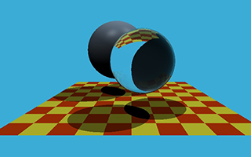
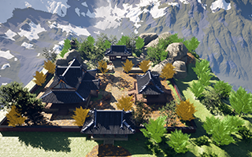
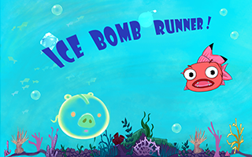
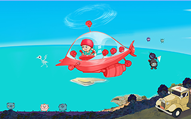
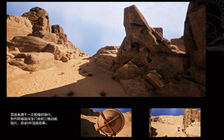
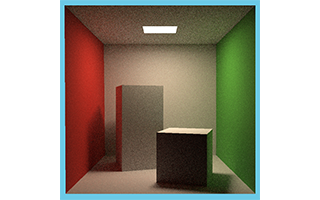
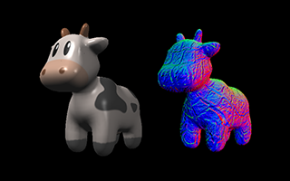

|
Email | CV | Github | My portfolio |
Yuan Jia I am a 3D artist and game designer exploring interactive media for inclusive learning. I am currently pursuing a Master's in Game Science and Design at Northeastern University, with a focus on game development and human-centered design. My research interests span computer vision, computer graphics, and computational media, with a particular interest in how computational technologies can support interactive and human-centered experiences. My long-term goal is to bridge art, technology, and research as a creative technologist and researcher. |
{kind=link}
News[09/2026] Started MS in Game Science and Design at Northeastern. |
Selected Projects |
|
 |
Rendering Images Using Ray Tracing
Computer Graphics Projects,2026 Summer Project Page | code Ray tracing is used to render images. One of the most important operations in ray tracing is finding the intersection between a ray and an object. Once the intersection of the ray and the object is found, shading can be performed and the pixel color returned. |
|
 |
Level Design for 3D Environments in Unreal Engine 5 (UE5)
Unreal level design project,2025 Project Page I started with a blockout in UE5 to set the scale and layout. Then, I modeled assets in 3ds Max, sculpted props in ZBrush, and unwrapped UVs in RizomUV. After texturing in Substance Designer, I assembled and lit the final scene in Unreal Engine 5. |
|
 |
Ice Bomb Runner
Ludum Dare Game Jam 58 Project,2025 Project Page | Game Link This is my very first Game Jam entry, developed in just 72 hours for the Ludum Dare Game Jam. It was a huge challenge but an incredible learning experience.I made the visual arts, UX/ UI design, and level design. |
  |
Coastline Guardian
TapTap Spotlight Game Jam Project,2025 Project Page | Game Link The 2025 theme was “Do you think this is a BUG?” We created a playable adventure game. The story is set on Earth in 2077. Players take on the role of a rescue team to eliminate virus-carrying insects and restore balance to the fragile ecosystem. |
|
 |
Image from My Undergraduate Animated Short Film
Animated Short Film, May 2025 Project Page The work centers on a “mistaken entry” as its core plot, shaping the protagonist A Fu's distinct personality and growth trajectory. Through unexpected events and well-paced conflict, it keeps the narrative tight and vivid while conveying positive themes of courage and friendship. |
|
 |
Solving the Rendering Equation with Monte Carlo Integration
Most precise for ray tracing Project Page | Code A complete implementation of the Path Tracing algorithm. The three methods Sample, eval, and pdf are used for auxiliary calculations of Path Tracing variables. |
|
 |
Blinn–Phong shading model
Computer Graphics Proejct,2026 Project Page | Code Implement interpolation algorithms for normal vectors, vertex colors, and texture colors based on the Blinn–Phong shading model |
|
Website template from here |